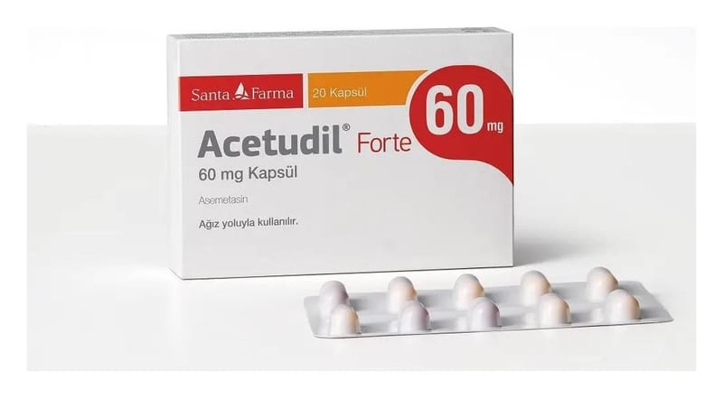

Acetudil Forte 60 mg Kapsül, 20 Adet

Ne için kullanılır
KT · Bölüm 1ACETUDİL®FORTE, alüminyum blister ambalajda 20 kapsül içeren bir üründür.
ACETUDİL®FORTE, etkin madde olarak asemetasin içerir.
Asemetasin, iltihap giderici (anti-inflamatuvar), ağrı kesici ve ateş düşürücü etkilere sahip steroid olmayan anti-inflamatuvar (NSAİ) bir ilaç grubuna dahildir.
ACETUDİL®FORTE, sığır kaynaklı laktoz monohidrat ve sığır kaynaklı jelatin içerir. Aşağıdaki durumların tedavisinde kullanılır: Dejeneratif eklem hastalığı, eklem kireçlenmesi (osteoartrit) Eklem iltihabı ile görülen romatizmal hastalık (romatoid artrit) Özellikle omurga eklemlerinde birleşme ve hareket kaybı ile görülen romatizmal bir
hastalık (ankilozan spondilit) Proteinin parçalanmasındaki bir soruna bağlı olarak zaman zaman ani şekilde ortaya çıkan, sıklıkla ayak başparmağındaki iltihapla kendini gösteren, eklemler üzerinde ileri derecede ağrıya, hassasiyete, kızarıklığa ve şişkinliğe neden olan eklem iltihabı (akut gut artriti) Akut kas iskelet sistemi ağrıları Ameliyat sonrası görülebilen inflamasyon, şişkinlik ve yumuşak doku hasarı (postoperatif ağrı) Kadınlarda adet sancılarına bağlı ağrılarda (dismenore)